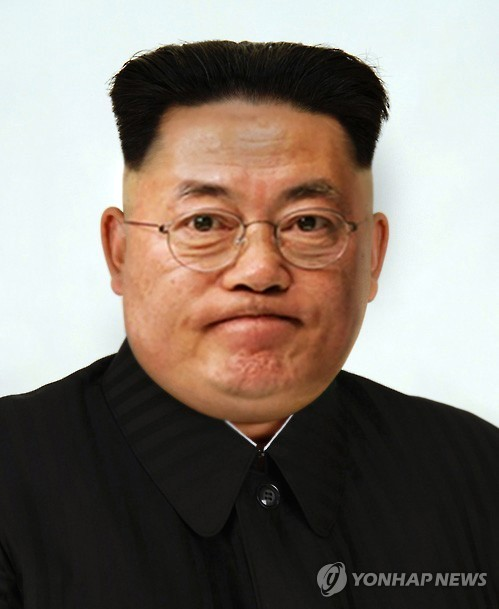

문재인이 대통령에 당선된지 2017년 후로 4년... 그 4년 동안에 참 많은 일이 있었다. 사람이 먼저다 라는 공약을 앞세운 대통령 선거 운동은 곧 그가 대통령이 되기에 충분했고, 이전의 대통령들이 말썽이었기에 우리들의 기대를 높여주기에 충분했다. 하지만 큰 기대는 곧 큰 실망으로 순식간에 바뀌었다. 마치 초가집이 불길에 휩싸이듯이 말이다.
다른 건 모르겠고 정치를 노무 못한다. 다른 국가들의 제안을 오냐오냐 다 받아주고 쌀도 퍼 날라주고, 마스크도 기부했다. 이건 마치 일제감정기가 시작되기 전 강화도 조약과 모습이 유사했다. 재앙이 4년동안 지속됐으니 국민들의 마음은 어떠한가.
